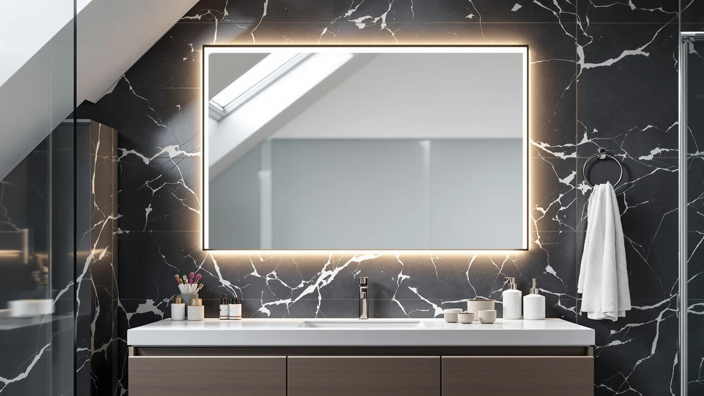

Best How to Clean Bathroom Mirror Glass (2026) | Best Bathroom Mirrors
Prices and picks verified as of September 2026. Independent, reader-supported reviews.


Things to Know Before You Buy
- Streaks are almost always a technique problem, not a cleaner problem. The cloth you use and how you wipe matter more than the brand of spray.
- Spraying the mirror directly sends liquid behind the frame, where it can rot the silver backing and cause the black edge spots you cannot buff out.
- You need two microfiber cloths: one damp for cleaning, one bone-dry for the final buff. A single cloth leaves a haze every time.
- Distilled water beats tap water because it carries no minerals to dry into spots. This one swap fixes most hard-water cloudiness.
- The whole job takes about fifteen minutes and costs a few dollars in supplies you likely already own.
Learning how to clean bathroom mirror glass takes about ten minutes, yet most people finish with a hazy, streaked surface that looks worse the moment the overhead light hits it. The problem comes down to three habits: the wrong cloth, too much spray, and wiping in random circles that move grime around instead of lifting it off.
You can fix all of that with two microfiber cloths, a simple cleaner, and a wiping pattern that pulls dirt off the glass. Below I walk through the five steps I use on the mirrors in my own bathroom, plus the mistakes that leave streaks behind. Follow the order and you get a clear reflection that holds up for weeks between cleanings.
What You'll Need
- Supplies: glass cleaner or a homemade white vinegar solution, distilled water, and a little rubbing alcohol for stubborn residue
- Tools: two clean microfiber cloths, a spray bottle, and a squeegee if you have one for a tall mirror
Step 1: Dust the mirror and clear the counter
Before you clean bathroom mirror glass, clear everything off the vanity below it. Toothbrush holders, cups, and skincare bottles catch overspray, and moving them first means you never have to work around them mid-wipe.
Run a dry microfiber cloth over the whole mirror and its frame to lift loose dust, hair, and lint. Dry dust turns into gray streaks the second it meets cleaner, so pulling it off first saves you a second pass. Pay attention to the top edge and the corners, where film builds up and hides in shadow.
If your mirror sits above a sink you use for shaving or styling hair, check the lower third for dried spatter. A quick dry buff loosens most of it and shows you where you will need extra cleaner later.
Step 2: Mix a streak-free cleaning solution
You have two solid ways to clean bathroom mirror glass. A store glass cleaner works fine, but a homemade mix of one part distilled water to one part white vinegar cuts through toothpaste flecks and hairspray film just as well for pennies. Distilled water matters because tap water leaves mineral spots as it dries.
Add a spoonful of rubbing alcohol to the bottle if your mirror collects greasy fingerprints or sticky product residue. Alcohol flashes off fast and helps the glass dry before water spots can form. Shake the bottle gently to combine, and label it if you plan to keep the mix under the sink.
Skip anything with heavy soap, wax, or a shine additive. Those leave the exact film you want to remove, and the buildup gets worse each time you clean the glass with them.
Step 3: Spray the cloth, not the glass
Spray your cleaner onto the microfiber cloth, not onto the mirror. That small switch stops most streaking on its own. When you spray the surface directly, liquid runs down behind the frame and pools at the bottom edge, where it seeps into the backing and causes the black spots called desilvering over time.
Dampen the cloth until it feels evenly moist but not dripping. You want enough cleaner to dissolve grime, not so much that it sheets down the glass and drips onto the counter. For a large mirror, work in sections so the cleaner never dries before you wipe it.
Step 4: Wipe from top to bottom in an S-pattern
Start at the top corner and wipe across in a tight S-pattern, overlapping each pass so you never leave a dry gap. Working top to bottom means any drips fall onto glass you have not cleaned yet, so you catch them on the way down instead of redoing finished areas.
Keep steady, even pressure. Circular scrubbing feels thorough, but it drags dissolved grime in loops and leaves the swirl marks you see when the bathroom light hits the mirror. Straight overlapping strokes pull dirt off the surface instead of relocating it, so the glass actually comes clean.
For a tall mirror, a squeegee speeds this up. Pull it in a reverse-S from the top, wiping the blade on a dry cloth after each stroke so you are not laying grime back down on clean glass.
Step 5: Buff dry and inspect in raking light
Swap to your second, bone-dry microfiber cloth and buff the whole surface. This removes the last of the cleaner before it can dry into a haze and gives you the clear, invisible finish you want. A dry cloth is not optional here, because the damp one you cleaned with will only spread moisture around.
Now inspect the mirror in raking light. Stand to one side and look across the glass at an angle, or turn off the overhead and hold a phone flashlight low against the surface. Streaks and missed spots that vanish under flat lighting jump out at this angle.
Touch up any remaining marks with a corner of the dry cloth and a small spritz of cleaner. Once the glass looks clear from every angle, you are finished, and you now know how to clean bathroom mirror glass so it stays clear well past the next shower.
Common Mistakes to Avoid
The biggest error people make when they clean bathroom mirror glass is drowning it in cleaner. More spray does not make a cleaner mirror, just more liquid to buff away and more chances for streaks. A lightly damp cloth beats a soaked one every time.
Reaching for paper towels ranks a close second. They shed lint across the glass and fall apart when wet, so you trade one problem for another. Wash your microfiber cloths without fabric softener too, since softener coats the fibers and turns them into streak machines.
You also want to avoid cleaning in direct sunlight or right after a hot shower. Warm glass dries the cleaner before you can wipe it, and that flash-drying bakes in the streaks you are trying to prevent. Wait for the mirror to cool and the steam to clear first.
Finally, do not ignore the edges and the frame. Grime creeps in from the border, and a spotless center framed by a filmy edge still looks dirty. Wipe the frame with a separate damp cloth so you never drag frame residue back onto clean glass.
Our Top Picks
If your current mirror fogs over, spots up, or has cloudy edges that no amount of buffing will fix, a replacement can make the whole cleaning routine easier. These three mirrors pair clear, easy-to-wipe glass with features that fight the steam and water spots that make bathroom mirrors hard to keep clean in the first place.

Editor’s Pick
InfiniGlass 42"x24" LED Bathroom Mirror
The built-in anti-fog panel keeps the center of the glass clear through a hot shower, so you clean less often. Front LED lighting also makes streaks easy to spot while you buff.
$115.97
Check Price on Amazon
Best Value
24"x32" LED Bathroom Mirror with
A defogging pad and adjustable color temperature at a friendly price. The smooth, frameless glass has no crevices to trap grime, so a two-cloth wipe leaves it clear.
$109.99
Check Price on Amazon
Premium Choice
USHOWER Brushed Nickel Bathroom Mirrors
The brushed nickel frame resists water spots and wipes down with the same cloth you use on the glass. A durable pick for a bathroom that sees heavy daily use.
$159.99
Check Price on AmazonFrequently Asked Questions
Why does my bathroom mirror still streak after I clean it?
Streaks come from too much cleaner, a damp or dirty cloth, and circular wiping. Spray the cloth instead of the glass, finish with a dry microfiber cloth, and wipe in straight overlapping strokes. That combination lets you clean bathroom mirror glass without the swirl marks that show up in bright light.
Can I use paper towels instead of microfiber?
You can, but paper towels shed lint and break down against wet glass, so you often trade streaks for fuzz. A flat-weave microfiber cloth holds together, absorbs more, and leaves nothing behind. If paper towels are all you have, a coffee filter or a sheet of newspaper works better for the final dry buff.
How do I clean bathroom mirror glass without leaving lint?
Use a flat-weave microfiber cloth for the wipe and a second dry microfiber cloth for the buff, and skip paper towels. Wash those cloths without fabric softener, which coats the fibers and makes them shed. When the cloth is clean and lint-free, the glass ends up lint-free too.
What removes hairspray and toothpaste splatter from a mirror?
A little rubbing alcohol dissolves both. Dab it on the spot with a corner of your cloth, let it sit for a few seconds, then wipe. For a heavy toothpaste crust, soften it first with a warm damp cloth so you lift it off rather than scratch it across the glass.
How often should I clean my bathroom mirror?
A quick weekly wipe keeps most bathroom mirrors clear. If yours sits above a busy sink or fogs after every shower, a light pass every few days stops splatter and water spots from building into a film that takes real scrubbing to remove.
Verdict
Once you know how to clean bathroom mirror glass the right way, the whole job takes fifteen minutes and never leaves a streak. The method comes down to five moves: dust the glass dry, mix a distilled-water cleaner, spray the cloth instead of the mirror, wipe top to bottom in an overlapping S-pattern, and buff dry with a second cloth while checking your work in raking light. Skip the paper towels, go easy on the spray, and keep two microfiber cloths on hand.
If your mirror still spots or fogs no matter how carefully you clean it, the glass itself may be the limit. An anti-fog model like the InfiniGlass 42x24 LED mirror stays clear through a hot shower and cuts your cleaning down to an occasional quick wipe. Either way, the technique above keeps whatever mirror you own looking clear and spot-free between washes.